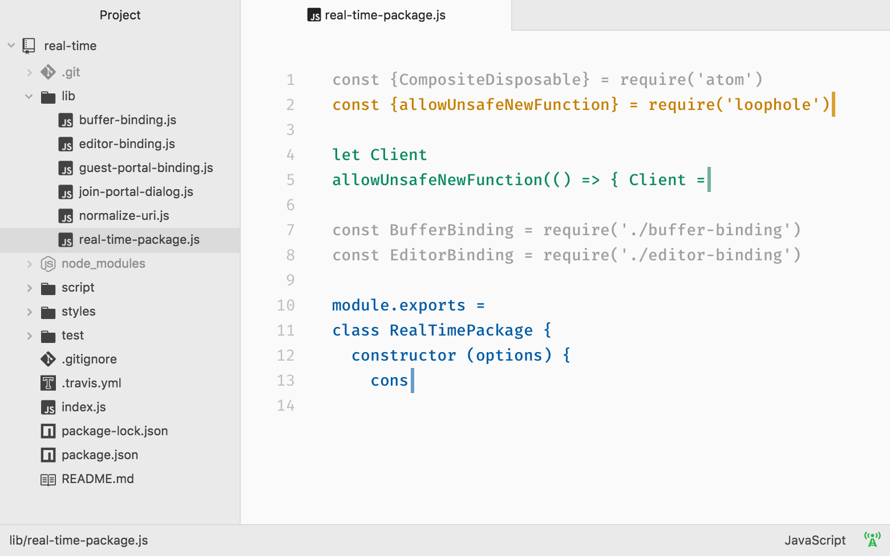

ATOM
Teletype for Atom
Great things happen when developers work together—from teaching and sharing knowledge to building better software. Teletype for Atom makes collaborating on code just as easy as it is to code alone, right from your editor.
Share your workspace and edit code together in real time. To start collaborating, open Teletype in Atom and install the package.

GitHub for Atom
A text editor is at the core of a developer’s toolbox, but it doesn't usually work alone. Work with Git and GitHub directly from Atom with the GitHub package.
Create new branches, stage and commit, push and pull, resolve merge conflicts, view pull requests and more—all from within your editor. The GitHub package is already bundled with Atom, so you're ready to go!